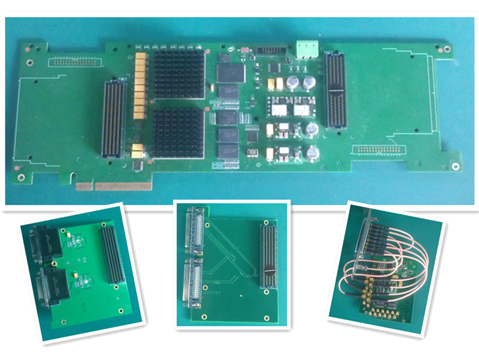
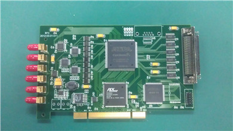
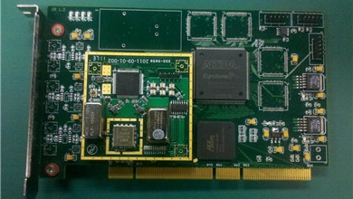
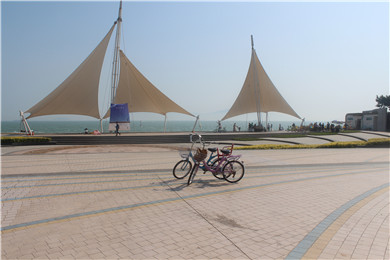
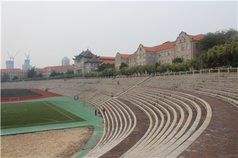
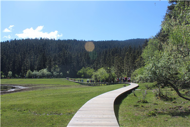
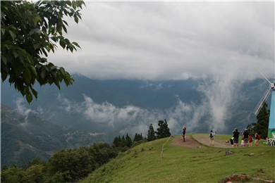

PCI-E motherboard based on two Xilinx Virtex V6 FPGA and three expansion sub-boards
Information
Education
2007-2009
BeiHang University, Beijing
Master of Computer Architecture in Computer Science
2003-2007
BeiHang University, Beijing
Undergraduate Degree in Computer Science
Work Experience
2013-Present
Samsung Electronics, Beijing
Embedded Engineer
2009-2012
Space Star Co. Ltd, Beijing
FPGA Engineer
Issued Patents
2011
CN 102361460 A
General high-speed parallel cycle interleaving Viterbi decoding
method
2010
CN 101969358 A
High-speed parallel RS decoding method for space communication
Publications
Qian Cui, Xiaopeng Gao, Xiang Long.
Design and Implementation of PCI Express DMA Controller Based on Weighted Round Robin Policy (in Chinese)
.Microcomputer Information, 2010, 26(23):147-149.
Zhe Zhang, Qian Cui, Xiaopeng Gao, Xiang Long.
Network Application for Multi-Core Architecture (in Chinese)
.Microelectronics & Computer, 2007, 24(10):39-42.
Skills
Over 50,000 Lines:
C/Verilog/Shell
Over 10,000 Lines:
Python/Java
Hobbles
Swimming/Travelling/Photography/Table Tennis
Projects
Software
Nov 2013-Present
wiGig wireless Linux driver and software architecture
· Optimize cache access efficiency during DMA operation
· Optimize DMA operation by pipelined DMA ring
· Optimize socket transmission for jumbo frames
· Get final throughput: 3.0Gbps in UDP, 2.5Gbps in TCP.
Link for this work
Jan 2013-Oct 2013
Kernel porting and power optimization for Samsung
Exynos 5410 chip (four A15 cores and four A7 cores)
· Port kernel and uboot to Exynos 5410 chip
· Analyse and optimize network performance with a thread monitoring the net throughput to choose different mechanisms
May 2011-Dec 2012
High-Speed prototype system based on PCI/PCI-E bus
· See the hardware section
Jan 2010-Apr 2011
Optimization Viterbi and RS decoding algorithm
· Implement Viterbi decoding parallel architecture based on Ping-
Pong buffering strategy
· Implement RS decoding parallel architecture based on interleaving dividing strategy
Oct 2008-Dec 2009
863 project “Reconstruction Accelerator”
· Design a duplex mode memory controller based on fair schedule strategy
· Design a parallel architecture for PSDM (Prestack Depth Migration) algorithm
Sep 2007-Sep 2008
Wormhole Router on SOC
· Design a new network modeling tool DClick for network on chip
Hardware
Here are some my hardware designs when I was an FPGA engineer ^_^


According to different settings, convert the serial data stream to frames by finding specific pattern (frame header or frame tail)

Clock generation board which can produce different frequencies source clock(minimal step length:0.01Hz, range:1-300MHz)
Photos
I and my wife are very like travelling and photography, here are some big gains from our tour.

Xiamen beach

Playground in Xiamen University which is the most beautiful university in China
A sleeping cat in Gulangyu Island
The postcards for our friends in Gulangyu Island

Shangri-La in YunNan
Lugu Lake in YunNan
ShiFen WaterFall in Taiwan

QingJing Farm in Taiwan
I and my treasure, and our happy life
Contact Me
qian.cui@samsung.com Company
If you want to learn more about me, you can download my CV .